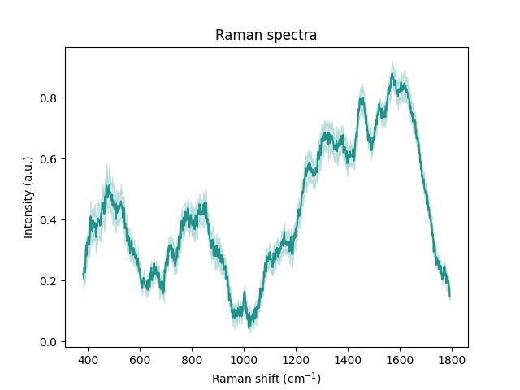

Note
Go to the end to download the full example code
Visualising spectral distributions
Sometimes, we have plenty of spectra we wish to visualise. To appropriately do that, it is more appropriate to visualise
summary statistics of the (groups of) spectra we want to investigate, such as the mean of the corresponding
collection of spectra and/or describe its spectral distribution. This is why RamanSPy offers a wide variety
of visualisation tools for plotting distributions of Raman spectra, which can be accessed via the ramanspy.plot.mean_spectra() method.
Note
The behaviour of the ramanspy.plot.mean_spectra() method closely follows that of the ramanspy.plot.spectra()
method. Hence, readers are advised to first check its documentation, as well as the Visualising spectra tutorial.
To show that, we will this time use the training dataset of the Bacteria data provided within RamanSPy. For this tutorial, we will only use the data for the first 10 bacteria species and use only 10 spectra per species.
import ramanspy
dir_ = r"../../../../data/bacteria_data"
X_train, y_train = ramanspy.datasets.bacteria("train", folder=dir_)
bacteria_lists = [[X_train[i:i+10, :]] for i in range(0, X_train.shape[0], 2000)]
bacteria_sample = bacteria_lists[:10]
bacteria_sample_labels = [f"Species {int(y_train[i*2000])}" for i in range(0, 10)]
Single plots
As with single spectra, we can also visualise a single group of spectra as a distribution.
Even for a small number of spectra (e.g. 3-5), it becomes hard to visualise them in a single plot. So, instead, we
can use RamanSPy to only highlight the mean of a group and a confidence interval around it (a 95% CI based on normal distribution).
This can be done by setting the dist parameter of the ramanspy.plot.mean_spectra() method to True (default behaviour).
ramanspy.plot.mean_spectra(bacteria_sample[0], plot_type='single')

<Axes: title={'center': 'Raman spectra'}, xlabel='Raman shift (cm$^{{{-1}}}$)', ylabel='Intensity (a.u.)'>
To plot more groups in a single plot, just provide the group list as follows:
ramanspy.plot.mean_spectra(bacteria_sample, plot_type='single')
<Axes: title={'center': 'Raman spectra'}, xlabel='Raman shift (cm$^{{{-1}}}$)', ylabel='Intensity (a.u.)'>
If we prefer, we can plot the individual spectra within the group instead of the CI by setting the dist to False.
Note that this method is not preferred when we have a large number of spectra within the group(s) we are interested in.
ramanspy.plot.mean_spectra(bacteria_sample[0], plot_type='single', dist=False)
<Axes: title={'center': 'Raman spectra'}, xlabel='Raman shift (cm$^{{{-1}}}$)', ylabel='Intensity (a.u.)'>
Separate plots
To improve the readability of the plot, we can also visualise distributions in separate plots:
ramanspy.plot.mean_spectra(bacteria_sample[:3], plot_type='separate')

- 

[<Axes: title={'center': 'Raman spectra'}, xlabel='Raman shift (cm$^{{{-1}}}$)', ylabel='Intensity (a.u.)'>, <Axes: title={'center': 'Raman spectra'}, xlabel='Raman shift (cm$^{{{-1}}}$)', ylabel='Intensity (a.u.)'>, <Axes: title={'center': 'Raman spectra'}, xlabel='Raman shift (cm$^{{{-1}}}$)', ylabel='Intensity (a.u.)'>]
Stacked plots
But that is still not ideal if we want to compare the distributions. In such cases, it is more informative to use stacked plots.
ramanspy.plot.mean_spectra(bacteria_sample, plot_type='stacked')
<Figure size 640x480 with 10 Axes>
Single stacked plots
Or single stacked plots.
ramanspy.plot.mean_spectra(bacteria_sample, plot_type="single stacked")
<Axes: title={'center': 'Raman spectra'}, xlabel='Raman shift (cm$^{{{-1}}}$)', ylabel='Intensity (a.u.)'>
We can also add more informative title, legend, axis labels, etc.
ramanspy.plot.mean_spectra(bacteria_sample, plot_type="single stacked", label=bacteria_sample_labels, title='Bacteria identification using Raman spectroscopy')

<Axes: title={'center': 'Bacteria identification using Raman spectroscopy'}, xlabel='Raman shift (cm$^{{{-1}}}$)', ylabel='Intensity (a.u.)'>
Total running time of the script: ( 0 minutes 1.068 seconds)